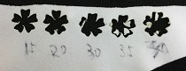
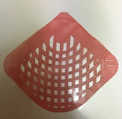

作り方は、レシピ一覧を参照してください。
まずは基礎の基礎から。巾着袋は直線縫いだけで作るからきっと簡単に作れる‼
工程
型紙を作る。それを布に写す。切る。
横を縫う
上を縫う
空きの処理をする
マチをつくる
紐を通す
失敗
私は勘違いをしていた。
横を縫い、空きの処理をしてから、上を縫わないと空きの処理ができないのだ。間違いをしていた…。もちろんほどき直して縫う。ショック…。工程間違えると縫えなくなるから、気をつけないといけない。
意見
★どんな方法で、何ができるのかよくわからないまま作業しなければならなくなる。★
解決：一番に工程を書く。
★見づらい★
解決：写真をもっと増やす。(写真を増やすためにもう一度作成します。)動画とか撮れたらいいなぁ。

布を切った。レーザーカッターのパワーは10で、スピードは1です。このくらいだと焦げないで切れるみたい。
布に彫刻をして、出来上がり線を描きたいと思ったけど、上手くいかない。原因として考えられるのは、布が薄いことと、

文章と写真だけで説明していくの難しいな…。巾着袋の反省を生かしてたくさん写真撮ったけど、どの部分を説明するとわかりやすいってのがよくわからない…。
刺しゅうのデザインは各自で考えてほしいからあまり図案をのせたくないな…。一つデザインがあるとそれに人は引っ張られやすくなるから創造の時間を邪魔しかねない…。しかし、じぶんで創造する事が難しい人もいるわけだからそれも考慮した方がいいのも確か。葛藤だな。
トルソーに布を巻いて服を作る

かみんぐすーん
製作中。頭の型紙どうしよ…
6月の4週目まで…布のテスト
6月の5週目まで…型紙・データの作成
6月25日…布を買いに行く。ユザワヤで見かけた気がする。(結果的に大塚屋という布の通販で購入。7月2日に届く。)
7月の3週目まで…本番の布を切る
7月の4週目まで…編む
※テスト期間は予備日
実際に展示会場であるギャラリーＴに行き、真っ白な壁に赤・毒というイメージが思い浮かんだ。
そして、小学生の頃衣装で着た赤いオーガンジーの布を思いついたのだ。
まずはテストから。
右から順にレーザーカッターのパワーの出力を5、8、10、12、14、16、15とした。スピードは2。
5や8は論外。ちゃんと切れてない。10も… 。12~16はそこそこちゃんと切れているから、このくらいの数値だろう。16だと少々溶けすぎてしまっているから、15がベストだろうか。
とういうことで、パワーは15に決定。スピードはひとまず2で奇麗に切れているのでそのまま。
その他に素材も試してみた。

オーガンジーよりもストレッチ性のある布。この素材は伸びやすく薄いため、布がたわまないようにまっすぐにするのが難しい…。右から順にパワーを3、5、8、10、6、7、5(これはスピードが1になっている)
6か7あたりがよい感じだが、布をまっすぐにしきれなくて、かなり切れ味にむらがある。
薄めのニット。これもストレッチ性のある布だ。体操服とかで使われているような布といったらわかるだろう。パワーは右から40、35、30、20、15だ。レーザーカットするというよりは、溶かすという表現の方が正しい。
ポイントとして、レーザーカットする布はは化学繊維であると、ほつれにくい。(無理やり切れ残りを引っ張ったらそこからほつれるが)天然繊維の方が好きだが、レーザーカッターの強みを生かすなら切り口がほつれないことだろうと考え、化学繊維を採用することにした。化学繊維は溶けるから、分厚い布でもパワーは弱めがよい。
テーマは海の中の魚・和。そして、私のイメージに浮かんできた赤・毒。それらが融合して完成形にになるのに苦労した。近すぎるワードは簡単に答えを出せすぎて新しいものを探しづらいこと、もともと服を製作する順序を知っているからそれを崩せないことが原因にある。
最初はお着物の羽織にレースみたいにレーザーカットしようと考えていた。何と面白味のない。先生からキルトみたいなというアドバイスをいただき、縫わないで服作ったら面白いなと思い、早速考えを巡らせた。
鱗をテーマに服を作る。
出力したらどんなもんかわからなかっため、とりあえず出力。鱗にいろいろな海の生き物が描かれたら面白いなと思い、有孔虫のイメージを入れてみた。布が重なる部分が美しい。あと、向こう側が透けるから、鱗の見える部分だけじゃなくて、見えないところもあった方がいいなと思った。

そして、それぞれの鱗パーツをつなぐ方法はこんな感じです。これなら上下にも左右にもつながる。紐を通すだけなため、縫わないし、つなぎ方を変えればよいから服にも仕立てることができる。
鱗の完成形。有孔虫どっか行ったし、独要素はもはや色だけだけど、これをたくさん繋いだらきっと美しいだろうな…。鱗について調べてたら、鱗も成長と共に、年輪のような線がつくみたいだ。イメージを鱗だけに集中して写真の切り方だと、データのミスで二回切ってしまったことと、ちいさい四角だからもう少しスピードを落とせばいいとアドバイスをいただきました。
袖どうしよ。

一回で切れる量が最大で13枚。(ミスがある場合はそれより少なくなる。)時間は18分と42秒。長い…。
板に縫を貼って切ってます。少しでも布のたわみが出ないように。板に張る作業が実は時間かかってるから全体で22~3分かかる計算になる。どのくらい切るべきかは、とりあえず組み立ててから考える。予想だけど、布の重なり部分があるから、切った布の長さよりは短くなるはず。後は色のバランス。

とにかく編んでいく。毛糸の後始末用の太めの針にリボンを通してやると効率がいいことが分かった。
いい感じです。素敵。しかし、触ると弱いところからどんどん壊れていってしまうから実用性は皆無。
江の島の展示では様々な人に奇麗な作品だねって言ってもらえて嬉しかった。正直作るの大変だったから心折れかけてたけど人に喜んでもらえるとこちらも嬉しい。ワークショップをぜひ開催してほしいという話も持ち上がった。子供に小物を作るキットとしても使えるとの声もいただいた。作品に触る人もいたので、ほんとは触ったり着たり出来たらもっと楽しんでもらえたんじゃないかなと思う。
この間鱗取りしたけど、マグロはたぶん円鱗。体の位置によって鱗の形は違う。丸いのは白い皮膚のところに多く、黒い皮膚のところは大きい長細い鱗だったな…。ギザギザしてた。人間の体毛と同じ…？
作りながらどんどん壊れていくという賽の河原状態の作業が続いた。布の丈夫さと、何回もリボンを通さなくてもよい設計と、リボンを通さなくてもよい編み方とを考えていかないといけないな。